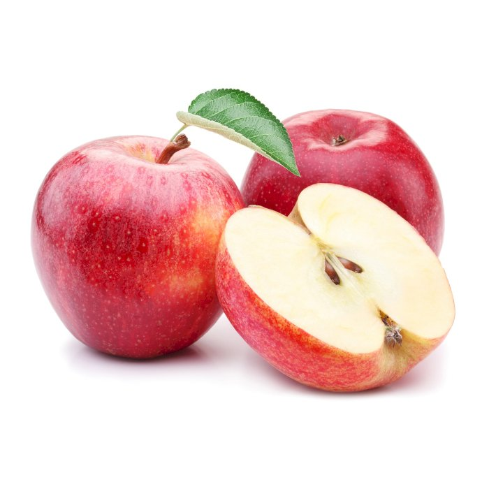
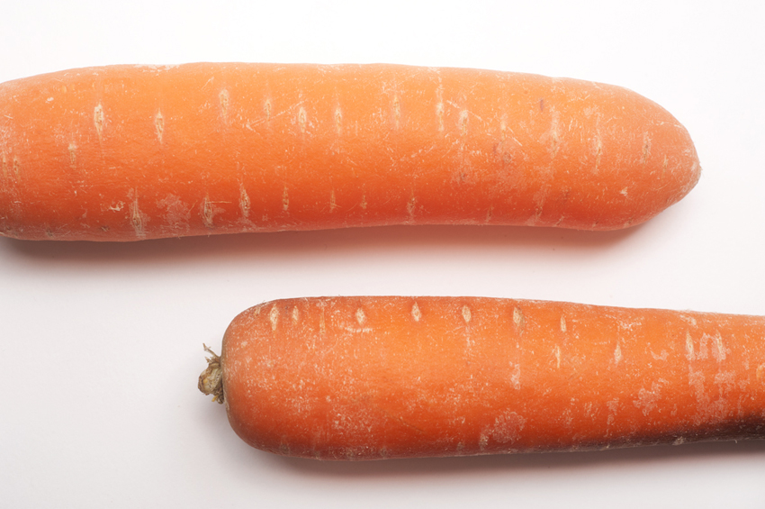

vente de fruits et légumes frais à Mayotte

La pomme est le fruit rond et comestible du pommier. Les pommiers cultivés, ou pommiers domestiques, les plus répandus du genre, sont cultivés dans le monde entier. Cet arbre est originaire d'Asie centrale, où l'on trouve encore son ancêtre sauvage, Malus sieversii.

La carotte est un légume-racine, généralement de couleur orange, bien qu'il existe des variétés anciennes, notamment des cultivars violets, noirs, rouges, blancs et jaunes, qui sont toutes des formes domestiquées de la carotte sauvage, Daucus carota, originaire d'Europe et d'Asie du Sud-Ouest.
| Nom | Prénom | Entreprise | Produit | village |
|---|---|---|---|---|
| Hamada | Oumar | Mayana Léguime | Banane | Mtsamboro |
| Said | Anli | Toundra | Orange | Passamainty |
| Bacar | Fatima | Mafana | Salade | Bandréle |
| Abdou | Nissai | Mayana frais | Papaye | Labattoir |